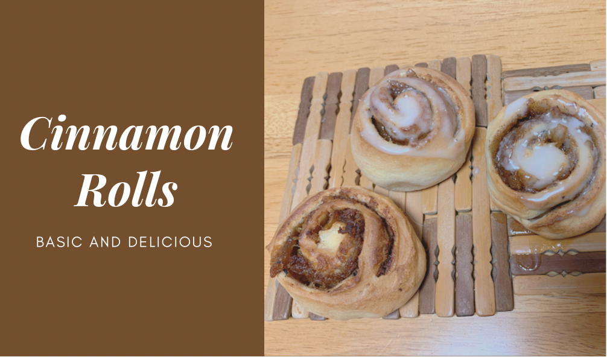

Emily's Reciepe
--- Cinnamon Rolls
Ingredients:
Dough:
All-purpose flour 300g
Milk 205g
Butter
52g
Sugar 40g
Yeast 3.1g
Salt
Stuffings:
Brown sugar 68g
Ground Cinnamon 5g (or the way you like)
Cream
cheese
(Optional)
Apple Sauce (Optional) Butter 78g
Decoration:
Powdered Sugar 80g
Water 20g
Steps:
1. Make the dough from the ingredients listed above. Gently fold the dough and cover it with plastic
wrap for ferment. Place the dough at the warmest spot you can find indoors.
2. Start makeing the stuffings. Add the melted butter with ground cinnamon, mix it until well
blended. Highly recommend those who have tried multiple times to add some apple sauce, it elevates
the flavor suprisingly!
3. After finishing the stuffings, take the dough out, and make sure it's rested for at least 1 hour.
The dough should be at least twice as large. Fold the dough and release the bubbles contained.
4. Shape the dough in a 35*25*2 (length, width, and height), remember not to make the dough too dry
while shaping. Then spread the stuffings on to the dough.
5. Roll the dough as if you're rolling paper but extremely gentle. Rest it on the oven plate for
secondary ferment. In the meantime, pre-heat the
oven at 180 degrees.
6. After 30 minutes, bake the dough for 25-35 minutes. After resting in room temperature, add the
decoration on top of your well-made cinnamon rolls!
Additional imformation can be found at this link: (Perfect
Homemade Cinnamon Rolls Recipe, No
Mixer. ASMR)